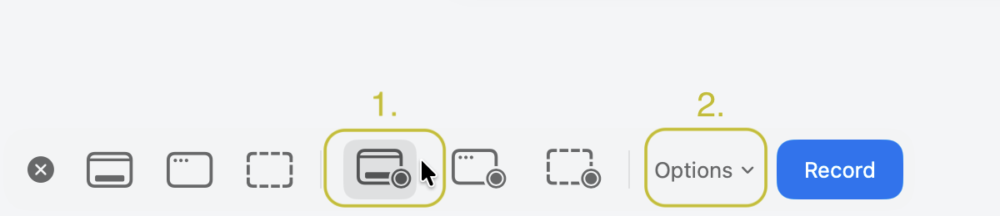
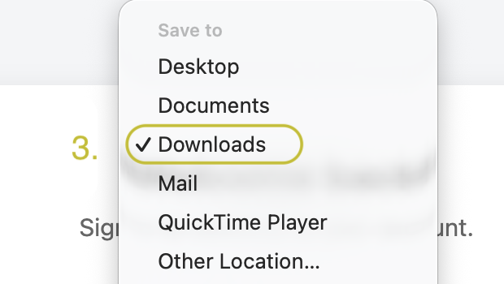
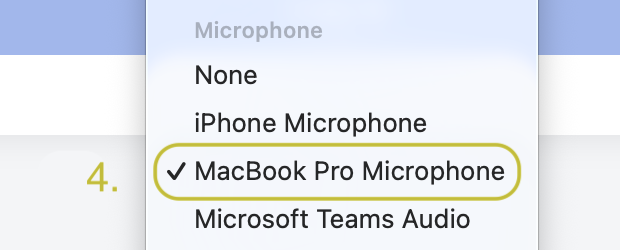
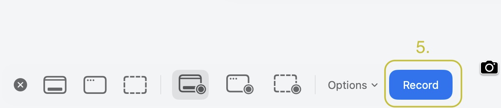
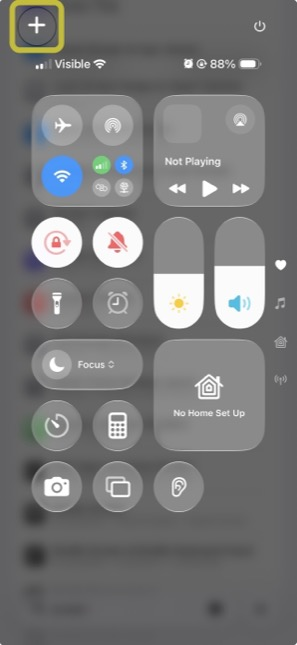
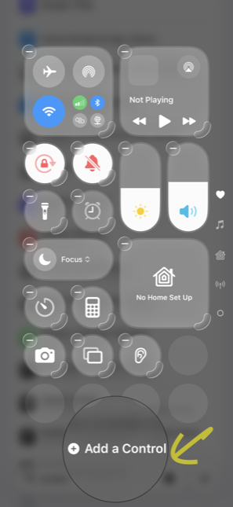
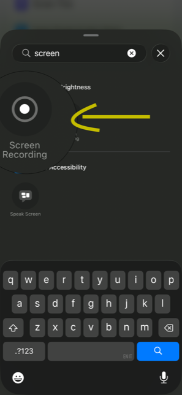
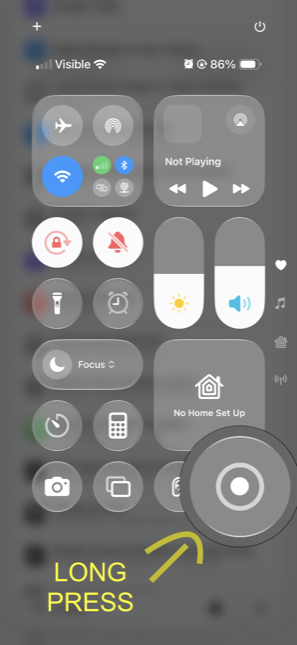
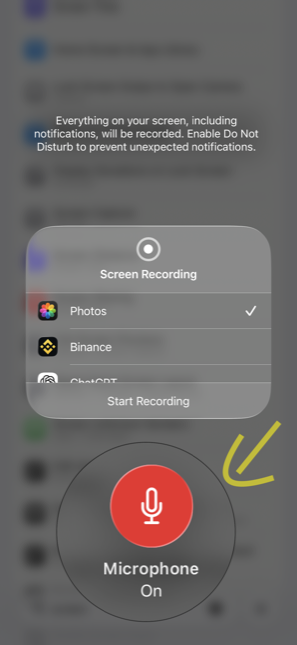
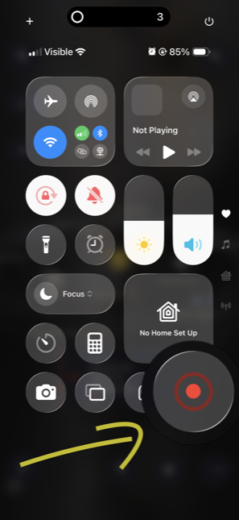

An automated feedback loop
for any app.
Screen-record your app — on your mac or your phone — and talk while you use it. Your coding agent gets everything you said, attached to the screen you were looking at when you said it.
-
1
Leave this running
$npx talkthru watchFirst run pulls ffmpeg, whisper.cpp and the speech model on its own.
-
2
Connect your agent once
talkthru is an MCP server, so any MCP client works — Cursor, Windsurf, Cline, Zed, Claude Desktop:
{ "talkthru": { "command": "npx", "args": ["talkthru-mcp"] } }Claude Code has a shortcut:
claude mcp add --scope user talkthru -- npx talkthru-mcp -
3
Record your app and talk. Send it over.
“check the feedback in my last talkthru session and implement it”
Works with a mac screen recording (⌘⇧5) or an iPhone one over AirDrop. Anything that produces a video with sound should work — point the watcher at a folder.
Install
npx talkthru doctor
Optional — watch sets itself up on first run. ffmpeg, whisper.cpp
and the speech model install themselves the first time you use it.
Setup — once, on your mac
-
1·2
Press ⌘⇧5, then pick a record mode — the icons with the ◉ dot. Open Options.

-
3
In Options, set Save to → Downloads. That is the folder
talkthru watchlooks at.
-
4
Further down the same menu, pick your mic under Microphone. Both settings stick for next time.

-
5
Hit Record and talk as you use your app.

No mic selected means a silent video and nothing to transcribe — that one is worth checking before your first recording.
Setup — once, on your phone
Optional. Only if you want to record a phone app rather than your desktop.
-
1
Open Control Centre and tap +.

-
2
Tap Add a Control at the bottom.

-
3
Search screen, pick Screen Recording.

-
4
Press and hold the new ◉ button.

-
5
Tap the mic so it reads Microphone On.

-
6
Tap ◉ to record. Talk as you go.

Then: record, talk, AirDrop. If your app talks back, mute it first — otherwise its voice lands in the transcript next to yours.
Output
## 00:34 · f11 — frames/f11.jpg - [00:39] "this button is too small, I keep missing it" ## 00:52 · f13 — frames/f13.jpg - [00:55] "and this error doesn't say what went wrong" - [01:04] "the list should scroll here, not the whole page" → 20 frames · 22 utterances · ~600 tokens for 107s
Why
I built this because I test my own app on my phone every day and kept losing the feedback on the way back to my editor — screenshotting, cropping, trying to describe which screen I meant. Now I just record, talk, and my agent picks it up. Sharing it in case it saves you the same trip.